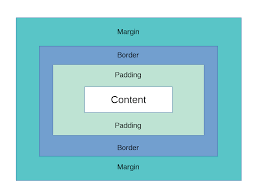

¿Que son los Box Model?
El Box Model es un modelo de caja que se utiliza en el diseño de páginas web para representar cómo se organizan y se presentan los elementos en una página. Este modelo consta de cuatro elementos principales: el contenido, el padding, el borde y el margen.
